Repair Procedures
Replacement
Seat Assembly Replacement
1. After loosening the mounting bolts, then remove the rear seat cushion (A).
Tightening torque :
16.7 - 25.5N.m (1.7 - 2.6kgf.m, 12.3 - 18.8lb-ft)
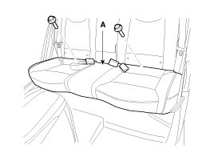
2. Disconnect the rear seat heater connectors (A).
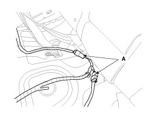
3. After loosening the mounting bolts, then remove the rear seat back (A).
Tightening torque :
16.7 - 25.5N.m (1.7 - 2.6kgf.m, 12.3 - 18.8lb-ft)
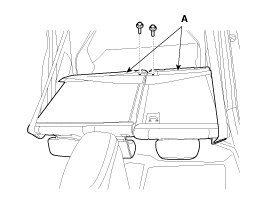
4. Installation is the reverse of removal.
NOTE:
- Make sure the connector is plugged in properly.
Seat Back Cover Replacement [RH]
CAUTION:
- When prying with a flat-tip screwdriver, wrap it with protective tape, and apply protective tape around the related parts, to prevent damage.
- Put on gloves to protect your hands.
1. Remove the rear seat assembly.
2. Push the lock pin (B), remove the headrest (A).
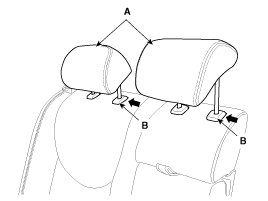
3. After loosening the mounting screws, then remove the rear seat back webbing guide (A).
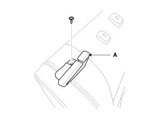
4. Remove the armrest cap (B).
5. After loosening the mounting bolt, then remove the armrest (A).
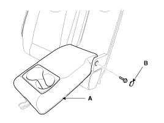
6. After loosening the mounting screws, then remove the armrest board (A).
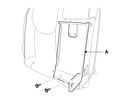
7. Using a screwdriver or remover, remove the seat back cover (A).
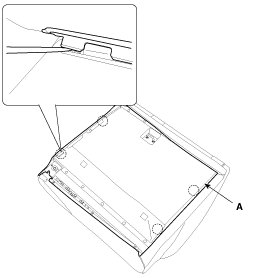
8. Remove the protector (A).
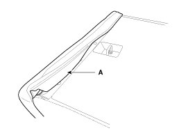
9. Pull out the headrest guides (A) while pinching the end of the guides, and remove them.
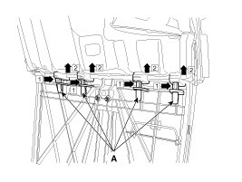
10. Remove the seat back cover from the frame.
11. After removing the velcro tape (B) on the rear of seat back and remove the seat back cover (A).
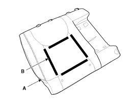
12. Installation is the reverse of removal.
Seat Back Cover Replacement [LH]
CAUTION:
- When prying with a flat-tip screwdriver, wrap it with protective tape, and apply protective tape around the related parts, to prevent damage.
- Put on gloves to protect your hands.
1. Remove the rear seat assembly.
2. Push the lock pin (B), remove the headrest (A).
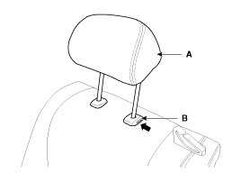
3. After loosening the mounting screws, then remove the rear seat back webbing guide (A).
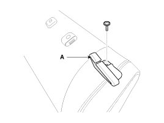
4. Using a screwdriver or remover, remove the seat back cover (A).
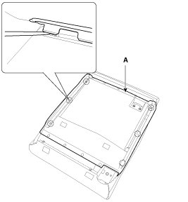
5. Remove the protector (A).
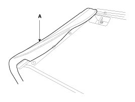
6. Pull out the headrest guides (A) while pinching the end of the guides, and remove them.
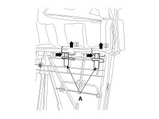
7. Remove the seat back cover from the frame.
8. After removing the velcro tape (B) on the rear of seat back and remove the seat back cover (A).
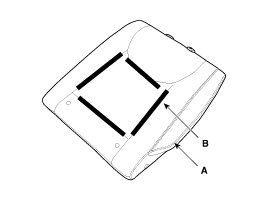
9. Installation is the reverse of removal.
Rear Seat Cushion Cover Replacement
CAUTION:
- When prying with a flat-tip screwdriver, wrap it with protective tape, and apply protective tape around the related parts, to prevent damage.
- Put on gloves to protect your hands.
1. Remove the rear seat cushion.
2. Remove the clips (A).
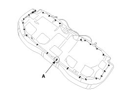
3. After removing the hog-ring clips (B) on the rear of seat cushion and remove the seat cushion cover (A).
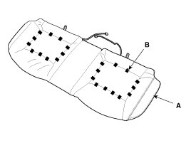
4. Installation is the reverse of removal.
NOTE:
- To prevent wrinkles, make sure the material is stretched evenly over the cover (B) before securing the hog-ring clips (A).
- Replace the hog-ring clips with new ones using special tool [C (09880-4F000)].
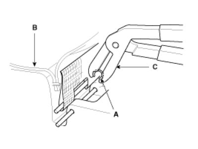